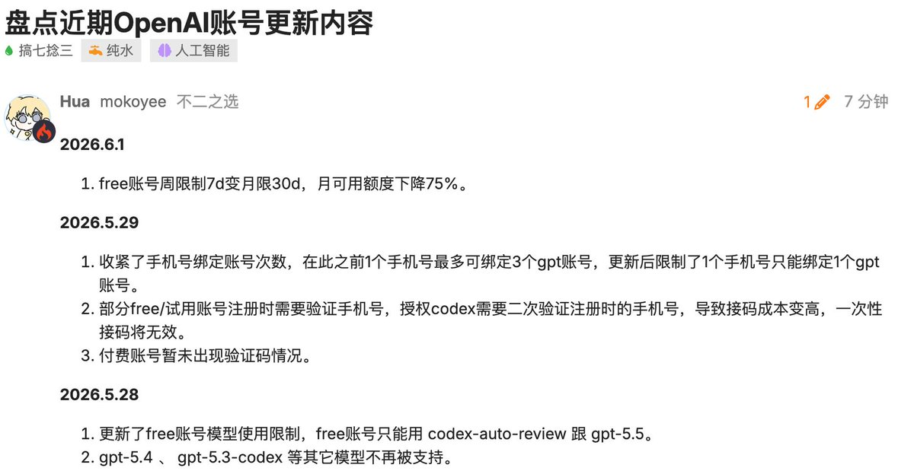

たたなこ
@tatanakots
@realNyarime 可是我注册gpt的时候完全没要求验证手机号，甚至还弹了0元试用plus的选项诶

奶昔🥤
@realNyarime
OpenAI账号不给钱，能用的越来越少了，估计是free号池导致的难怪风控那么严
免费账号周限7d变月限30d，按月重置
每个手机号只能绑定一个GPT，授权codex要二验注册时的手机号，给钱就几乎不验
可用模型只剩codex-auto-review和gpt-5.5，其余像gpt-5.3-codex、gpt-5.4等模型只对付费用户开放 https://t.co/FZmIAv9b9l